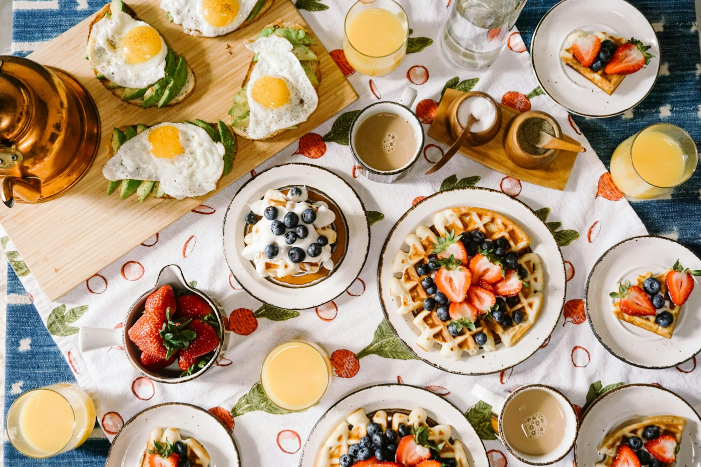
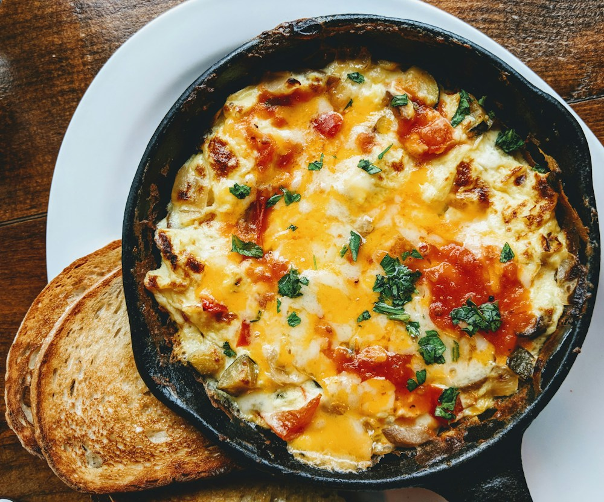
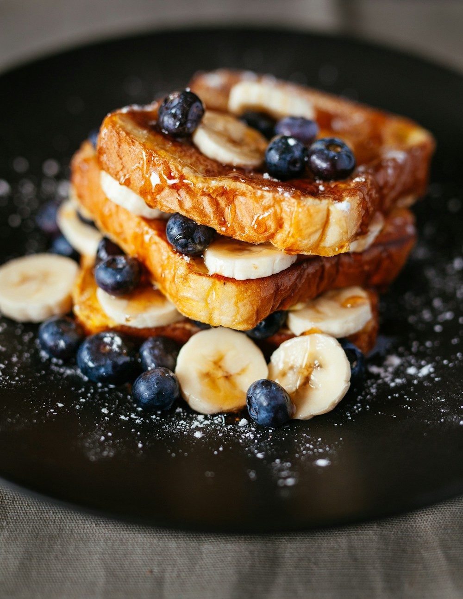

珈琲家
あまゆり
岐阜県岐阜市西野町6丁目北町22
週に4日、朝だけ開く隠れ家カフェ。
モーニングは、ドリンク代のみです。
営業は水・木・金・土の 8:30〜12:00（ラストオーダー 11:30）。日・月・火はお休みです。

- 日お休み
- 月お休み
- 火お休み
- 水営業8:30〜12:00
- 木営業8:30〜12:00
- 金営業8:30〜12:00
- 土営業8:30〜12:00
※写真はイメージです（フリー素材）
モーニングの中身
モーニングサービスは ¥0。ドリンク代のみで、次の内容が付きます。
- 1日替わりオープンオムレツその日替わりのオープンオムレツです。
- 2小倉トースト岐阜のモーニングの定番です。
- 3エビのサラダ小エビ入りのサラダです。
- 4手作りデザート手作りのデザートが付きます。

朝の定番として、キッシュの紹介もあります。住宅街に静かに佇む店内で、手作り感のある料理と香り高いコーヒーをお楽しみください。
ランチは現在休止中です（店頭掲示より）。最新の営業内容は店舗へご確認ください。
ドリンク料金
| ドリンク | 料金 |
|---|---|
| ブレンドコーヒー | ¥650 |
| カフェ・オ・レ | ¥730 |
| アッサム（紅茶） | ¥650 |
| アイスミルク | ¥600 |
| りんごジュース | ¥600 |
| アイスココア | ¥780 |
ドリンクは ¥600〜です。モーニングサービス（¥0）はドリンクをご注文の方へのサービスです。料金は出典どおりの表示です。

ご来店前に
- 営業は水・木・金・土の午前だけです（8:30〜12:00、ラストオーダー 11:30）
- テーブルは2卓のみです。混雑時はお待ちいただく場合があります
- 1組4名まで（お子様を含みます）でお願いします
- 駐車場は店前2台のみです。お車は乗り合わせでお越しください
- 近隣の駐車場は当店のものではありません。駐車はご遠慮ください
席数・組数・駐車場の案内は店頭掲示の内容です。内容が変わっている場合があるため、最新の案内は店舗へご確認ください。
お店について
- 場所住宅街に静かに佇む隠れ家カフェ
- 営業週4日・午前のみ。モーニング専門の営業です
- 料理手作り感のあるモーニングと、香り高いコーヒー
- 窓口公式サイトはなく、公式Instagramが窓口です

営業時間・定休日
| 営業時間 | 水・木・金・土 8:30〜12:00（ラストオーダー 11:30） |
|---|---|
| 定休日 | 日曜・月曜・火曜 |
| ランチ | 休止中（店頭掲示より） |
営業日・時間は変更の場合があります。ご来店前に店舗へご確認ください。
アクセス
| 店名 | 珈琲家あまゆり |
|---|---|
| 住所 | 岐阜県岐阜市西野町6丁目北町22 |
| 電話 | 058-227-3265 |
| 駐車場 | 店前2台のみ（店頭掲示より）。乗り合わせにご協力ください |
よくある質問
モーニングサービスは ¥0 で、ドリンク代のみでご利用いただけます。日替わりオープンオムレツ、小倉トースト、エビのサラダ、手作りデザートが付きます。
水・木・金・土の 8:30〜12:00（ラストオーダー 11:30）です。日・月・火はお休みです。
ランチは現在休止中です（店頭掲示より）。最新の状況は店舗へご確認ください。
店前に2台分あります（店頭掲示より）。台数が限られるため、乗り合わせでお越しください。近隣の駐車場は当店のものではありません。
テーブルは2卓のみで、1組4名まで（お子様を含みます）でお願いしています（店頭掲示より）。
お問い合わせ
水・木・金・土 8:30〜12:00（日・月・火はお休み）
制作サンプルのご案内
このページは制作サンプル（デモ）です。店舗の公式サイトではありません。公式の窓口は Instagram（@amayuri0113）です。
写真の出所：掲載写真はすべて Unsplash のフリー素材で、イメージ写真です（実際の店舗・料理の写真ではありません）。
気になるところがあればお知らせください。その内容で修正して、正式なサイトとして納品します。